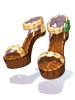
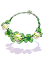
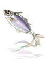
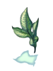
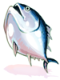

Doram
Dorams are a new playable race in Ragnarok Online, separate from humans. Each of them start out as a Summoner class, and do not advance to any other classes. They can reach a maximum of Base level 200 and Job level 60.
Dorams are special as their skill set branches out to cover both offense and support, as well as debuffs and tanking, making them extremely versatile in combat depending on their builds. Additionally, they are considered Small/Demi-human, which means they have a certain advantage in PvP environments.
To make a Doram character, select the Doram Race instead of Human during character creation.
Skills
Doram skills are divided into four categories: Basic Skills, Sea-based Skills, Land-based Skills and Life-based skills. The Basic Skills are the ones every Doram will spend their first 9 skill points on, while the Sea, Land, and Life based skills are three independent branches of skills. Each branch ends in a special passive skill that boosts the efficiency of skills within the branch, if enough points have been invested in it.
| Basic Skills | |||
|---|---|---|---|
| Skill | Description | Levels | Type |
 New Basic Skill New Basic Skill
|
Enables sitting, trading, joining/organising parties, opening storage, using emotions, and opening chatrooms. | 1 | Passive |
 Bite Bite
|
Inflicts 200% melee physical damage to a single target. Damage increases when the target has less HP.
When Base Level is above 30, it has a chance to be dual-cast. Consumes 10 SP |
1 | Offensive |
 Hide Hide
|
Hide inside a bush to avoid enemies and make yourself non-targetable. Re-casting this skill will cancel it.
Insects, Demons, and Boss monsters can still detect you. This skill is not cancelled by detection skills, but can be cancelled by knockback. Consumes 30 SP |
1 | Active |
 Scratch Scratch
|
Inflicts 100%~200% melee physical damage to a single target with a chance to cause Bleeding. Consumes 20~30 SP | 3 | Offensive |
 Stoop Stoop
|
Stoop down to reduce all incoming damage by 90% for 6 seconds. The skill is cancelled when the caster moves or is knocked back.
Consumes 10 SP. 10 seconds Cooldown. |
1 | Active |
 Lope Lope
|
Leaps towards a targeted location up to 14 cells away. Consumes 30 SP | 3 | Active |
 Sprite Marble Sprite Marble
|
Summons the spirits of Life, Earth, and Sea to float around the summoner and increase MaxHP by 1000 and MaxSP by 100 permanently. | 1 | Passive |
 Soul Attack Soul Attack
|
Increase the range of normal attacks to 15 cells. | 1 | Passive |
| Sea-based Skills (Supportive) | |||
|---|---|---|---|
| Skill | Description | Levels | Type |
 Fresh Shrimp Fresh Shrimp
|
Places a buff on an Ally that regenerates some HP every 10~6 seconds, lasting 2 minutes. Consumes 22~30 SP | 5 | Supportive |
 Bunch of Shrimp Bunch of Shrimp
|
Gives ATK and MATK +10% to all party members on the screen for 60~180 seconds. Consumes 44~60 SP and a Shrimp. | 5 | Supportive |
 Tuna Belly Tuna Belly
|
Restores 10%~90% HP on self. Consumes 20~60 SP | 5 | Supportive |
 Tuna Party Tuna Party
|
Places a barrier on a single ally that blocks all physical damage lasting 30 seconds or until its durability wears off.
The durability is 10%~50% of the caster's MaxHP. Consumes 20~60 SP |
5 | Supportive |
 Power of Sea Power of Sea
|
Increases Healing effectiveness by 10% permanently. If 20 or more skill points are invested in Sea-based skills, increases Healing effectiveness further by 20%. | 1 | Passive |
 Grooming Grooming
|
Removes Poison, Frozen, Stun, Sleep, Bleeding, Silence, Ice, Freezing, Deep Sleep, Fear, and Mandragora Howling from yourself. Increase Flee by 100 for 3~7 seconds. | 5 | Supportive |
 Purring Purring
|
Apply the effects of Grooming skill on all party members and yourself. Increases party members' and your Flee by 100 for 7~15 seconds. | 5 | Supportive |
 Tasty Shrimp Party Tasty Shrimp Party
|
Apply the effects of Fresh Shrimp on all party members and yourself. The caster receives Blessing of Shrimp, increasing SP recovery by 150%. Lasts for 12~20 seconds. | 5 | Supportive |
 Spirit of Sea Spirit of Sea
|
Absorb the Spirit of Sea to enhance Sea-based skills.
Fresh Shrimp: Doubles HP recovery. Bunch of Shrimp: Extends the duration of ATK and MATK increase by 120 seconds. Tuna Belly: Reduce skill cooldown by 5 seconds. Tuna Party: Increases Tuna Party strength. Tasty Shrimp Party: Doubles HP recovery of caster and all party members. |
1 | Passive |
| Land-based Skills (Magical) | |||
|---|---|---|---|
| Skill | Description | Levels | Type |
 Silvervine Stem Spear Silvervine Stem Spear
|
Inflicts 700% magical damage to a single target with a chance to cause Bleeding. Skill level determines attack element.
When base level is above 30, it has a chance to be dual-cast. Consumes 40 SP
|
5 | Offensive |
 Silvervine Root Twist Silvervine Root Twist
|
Snares one target and prevent them from moving for 7~15 seconds, while dealing a 100 Poison-element damage per second.
Consumes 10~18 SP |
5 | Supportive |
 Catnip Meteor Catnip Meteor
|
Summons a rain of catnip fruits in a 3x3~7x7 area, dealing 300%~700% Magical damage to enemies within it.
If a Catnip Fruit is consumed, has a chance to inflict Curse. Consumes 20~80 SP |
5 | Offensive |
 Catnip Powdering Catnip Powdering
|
Creates a 3x3~7x7 cloud of catnip powder centered on a single target, reducing the ATK and MATK of enemies in the AoE by 50% while also reducing their movement speed. The effect last for 3~7 seconds.
SP Cost is reduced with higher levels. Consumes 40~24 SP and a Catnip Fruit |
5 | Supportive |
 Power of Land Power of Land
|
Raises your INT by 20 permanently. If 20 or more skill points are invested in Land-based skills, MATK +20%. | 1 | Passive |
 Chattering Chattering
|
Increase ATK and MATK by 100 for 5 seconds, increase Movement Speed for 10 seconds. Consumes 50~30 SP. | 5 | Supportive |
 Meow Meow Meow Meow
|
Increase party members' and your own ATK and MATK by 100, and increase party members' and your own Movement Speed. Lasts 8~12 seconds, consumes 100~60 SP. | 5 | Supportive |
 Nyang Grass Nyang Grass
|
Change players' equipment DEF and MDEF to 0, reduces monsters' DEF and MDEF by 50%. Has an Area of Effect of 5x5~9x9, lasts for 6~10 seconds. | 5 | Supportive |
 Spirit of Land Spirit of Land
|
Absorb the Spirit of Land to enhance Land-based skills.
Silvervine Stem Spear: For 3 seconds after casting, massively increase Movement Speed. Silvervine Root Twist: For 3 seconds after casting, increase MATK by a value equal to your Base Level. Catnip Powdering: For 3 seconds after casting, increase Perfect Dodge by a value equal to your Base Level/12. Catnip Meteor: For 3 seconds after casting, instantly casts Silvervine Stem Spear on enemies if damaged by long-ranged physical attacks. Nyang Grass: For 3 seconds after casting, increase MATK by a value equal to your Base Level. |
1 | Passive |
| Life-based Skills (Physical) | |||
|---|---|---|---|
| Skill | Description | Levels | Type |
 Picky Peck Picky Peck
|
Inflicts 300%~700% ranged physical damage to a single target.
When base level is above 30, it has a chance to be dual-cast. Consumes 10~18 SP |
5 | Offensive |
 Arclouse Dash Arclouse Dash
|
Increases the caster's AGI by 20~40 for 60~100 seconds; while also increasing movement speed for the duration. It also increases the damage of life based skills while active. Consumes 12~20 SP | 5 | Supportive |
 Scar of Tarou Scar of Tarou
|
Inflicts 100%~500% ranged physical damage to a single target and causes a debuff that drains a percentage of their HP every second.
When base level is above 30, it has a chance to be dual-cast.Consumes 10~18 SP |
5 | Offensive |
 Lunatic Carrot Beat Lunatic Carrot Beat
|
Inflicts 300%~700% ranged physical damage to a target and all enemies within a 3x3~7x7 area around it.
If a Carrot is consumed, has a chance to inflict Stun. Consumes 15~35 SP |
5 | Offensive |
 Power of Life Power of Life
|
Raises FLEE, HIT, and CRIT by 20 permanently. If 20 or more skill points are invested in life-based skills, Ranged damage +20%. | 1 | Passive |
 Hiss Hiss
|
Increase Perfect Dodge by 50 and Movement Speed of yourself and party members on screen. Perfect Dodge is increased for 3 seconds, Movement Speed is increased for 3~6 seconds. | 5 | Supportive |
 Power of Flock Power of Flock
|
Cast Fear and Freezing on all enemies within an Area of Effect of 7x7 ~ full screen. | 5 | Supportive |
 Spirit of Savage Spirit of Savage
|
Summons the Spirit of Savage to rush and attack targets in a straight line, damaging all enemies in its path. Deals 400% ~ 1000% attack damage. | 5 | Active |
 Spirit of Life Spirit of Life
|
Absorb the Spirit of Life to enhance Life-based skills.
Increase the damage of the following skills based on the Summoner's remaining HP:
|
1 | Passive |
Skill Tree
Equipment
Dorams have some unique sets of equipment. In the lower levels, they can use Eden Group Equipment like any other class, but at higher levels, their options revolve mainly around the Doram-exclusive armour set and accessories. Additionally, they can only use Foxtail-type staves as weapons.
The most basic armour set (Doram Private set) can be bought at the Doram Shop in Prontera /navi main_office 217/215. The more advanced sets as well as the weapons are all monster drops. On the other hand, most of the Doram's accessories can only be obtained through Doram Equipment Exchange.
| Weapons | |||
|---|---|---|---|
| Image | Name | Description | Acquisition |
| Delicate Foxtail Model [2] | ATK +195. MaxHP +200. Ranged Damage +8%.
Every 3 refines, DEX +3, MaxSP +15. Required Level: 100 |
||
| Fine Foxtail Model [2] | ATK +240. MaxHP +5%. Ranged Damage +8%.
Every 2 refines, DEX +3, MaxSP +15. Required Level: 140 |
||
| Elaborated Yellow Foxtail Model [1] | ATK +270. MaxHP +7%. Ranged Damage +9%.
Has a chance to cast Level 1 Fresh Shrimp or the highest level learned on the user when using Picky Peck. Every 2 refines, MaxSP +20, Ranged Damage +1%. Required Level: 175 |
||

|
Sinmyo Foxtail Staff [2] | ATK +100, MATK +240. MaxSP +100.
Every 3 refines, MATK +2%, MaxSP +1%. Required Level: 100 |
|
| Magic Foxtail Staff [2] | ATK +120, MATK +260. MaxSP +100.
Every 2 refines, MATK +2%, MaxSP +1%. Required Level: 140 |
||
| Magic Yellow Foxtail Staff [1] | ATK +140, MATK +280.
Has a chance to cast Level 1 Arclouse Dash or the highest level learned on the user when using Fresh Shrimp. Every 2 refines, MATK +3%. Required Level: 175 |
||
| Armour Sets | |||
|---|---|---|---|
| Image | Name | Description | Acquisition |
| Doram Private Suit [1] | DEF: 80. MaxHP +500, MaxSP +100
Every 3 Refines, INT +1, DEX +1 Required Level: 100 |
Doram Shop /navi prontera 126/212
| |
| Doram Private Manteau [1] | DEF: 20. FLEE +5. Resistance to Neutral property +2%
Every 3 Refines, Perfect Dodge +1 Required Level: 100 | ||
|  | Doram Private Shoes[1] | DEF: 20. MaxHP +100, MaxSP +50
Every 3 Refines, HP/SP Recovery +10%. Required Level: 100 | |
| Private Set Bonus | MaxHP +1000. Reduces Fixed Cast Time by 15%. Casting cannot be interrupted.
Reduces Fixed Cast Time by an additional 1% per refine level of the Suit, Manteau, and Shoes. | ||
| Image | Name | Description | Acquisition |
| Doram Luxury Suit [1] | DEF: 100. MaxHP +10%, MaxSP +10%.
Every 2 Refines, INT +1, DEX +1 Required Level: 140 |
One-Horned Scaraba | |
| Doram Luxury Manteau [1] | DEF: 25. FLEE +7. Resistance to Neutral property +3%
Every 3 Refines, LUK+1, Perfect Dodge +1 Required Level: 140 |
Rake Scaraba | |
| Doram Luxury Shoes[1] | DEF: 30. MaxHP +300, MaxSP +100
Every 3 Refines, HP/SP Recovery +20%. Required Level: 140 |
Two-Horned Scaraba | |
| Luxury Set Bonus | MaxHP +3000. Reduces Fixed Cast Time by 20%. Casting cannot be interrupted.
Reduces Fixed Cast Time by an additional 1% per refine level of the Suit, Manteau, and Shoes. | ||
| Image | Name | Description | Acquisition |
| Doram Elegant Suit [1] | DEF: 120. MaxHP +15%, MaxSP +15%
Every Refine, INT +1, DEX +1. If refine level is +9 or higher, Reduces SP cost of skills by 5%. Required Level: 175 |
Fruit Pom Spider | |
| Doram Elegant Manteau [1] | DEF: 30. FLEE +10. Resistance to Neutral property +5%
Every 2 Refines, INT +1, DEX +1, LUK +1, Perfect Dodge +1 Required Level: 175 |
Pom Spider | |
| Doram Elegant Shoes[1] | DEF: 35. MaxHP +10%, MaxSP +5%
Every 2 Refines, MaxHP +100, MaxSP +20. If refine level is +9 or higher, Reduces SP Cost of Lope by 5. Required Level: 175 |
Charge Basilisk | |
| Elegant Set Bonus | MaxHP +4000. Reduces Fixed Cast Time by 25%. Casting cannot be interrupted.
Reduces Fixed Cast Time by an additional 1% per refine level of the Suit, Manteau, and Shoes. | ||
| Accessories | |||
|---|---|---|---|
| Image | Name | Description | Acquisition |
|  | Fresh Grass Necklace [1] | Perfect Dodge +5. Reduces the cooldown of Scar of Tarou by 5 seconds. | Sting |
| Cute Grass Necklace [1] | Healing efficiency +5%. Reduces the cooldown of Tuna Party by 7 seconds. | Stapo | |
| Charm Grass Necklace [1] | MDEF +5. Reduces the Variable Cast Time of Catnip Meteor by 1 second. | Roween | |
| Lesser Bunny Talisman [1] | DEX +1
If worn with Private Set and Fresh Grass Necklace: Required level: 100 |
Doram Equipment Exchange | |
| Intermediate Bunny Talisman [1] | DEX +2
If worn with Luxury Set and Fresh Grass Necklace: Required level: 140 | ||
| Superior Bunny Talisman [1] | DEX +3
If worn with Elegant Set and Fresh Grass Necklace: Required level: 175 | ||
|  | Lesser Tuna Talisman [1] | VIT +1
If worn with Private Set and Cute Grass Necklace: Required level: 100 | |
| Intermediate Tuna Talisman [1] | VIT +2
If worn with Luxury Set and Cute Grass Necklace: Required level: 140 | ||
| Superior Tuna Talisman [1] | VIT +3
If worn with Elegant Set and Cute Grass Necklace: Required level: 175 | ||
|  | Lesser Leaf Talisman [1] | INT +1
If worn with Private Set and Charm Grass Necklace: Required level: 100 | |
| Intermediate Leaf Talisman [1] | INT +2
If worn with Luxury Set and Charm Grass Necklace: Required level: 140 | ||
| Superior Leaf Talisman [1] | INT +3
If worn with Elegant Set and Charm Grass Necklace: Required level: 175 | ||
| Shining Eggplant Talisman [1] | Reduces the variable cast time of Silvervine Stem Spear by 50%.
Increases the damage of Silvervine Stem Spear by 1% per level of Silvervine Stem Spear known for every 6 base INT. Required level: 100 | ||
|  | Fresh Tuna Talisman [1] | Reduces the cooldown of Tuna Party by 5 seconds.
Adds a chance of casting Level 1 Tuna Party or the highest level learned on the user when receiving a melee attack. Required level: 100 | |
| Chubby Earthworm Talisman [1] | Reduces the variable cast time of Picky Peck by 50%.
Increases the damage of Picky Peck by 1% per level of Picky Peck known for every 6 base DEX. Required level: 100 | ||
See Also